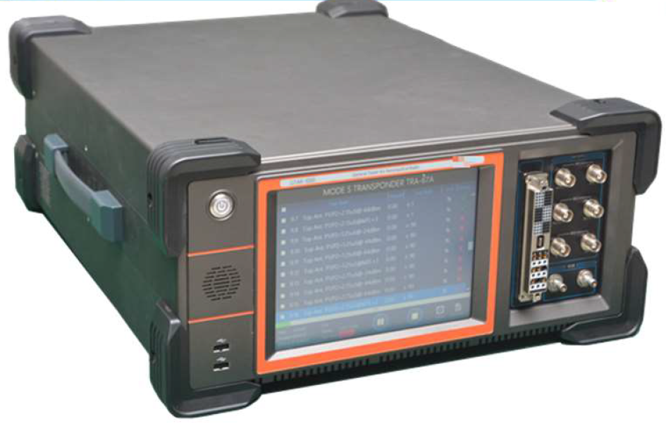
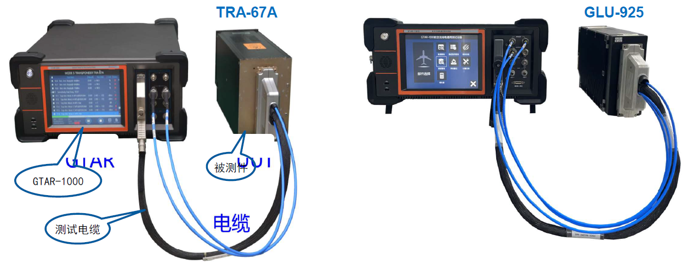

GTAR-1000
The GTAR-1000 is an open general automatic test platform designed for aeronautical radio systems. It integrates communication, navigation, and surveillance (CNS) signal simulation into one unified platform.
The system includes built-in signal simulators, power supply, bus interfaces, and discrete signal resources required for comprehensive avionics testing.
Based on an ATML-compliant TPS development platform, the GTAR-1000 supports full lifecycle test program development, debugging, execution, and management.
It supports both automated and manual testing modes, equipped with a touch-screen interface and user-friendly software. The system can operate independently or be integrated into ATE systems.
CNS Testing Capability
Supports a wide range of avionics systems including communication, navigation, and surveillance equipment, suitable for MRO, production, and engineering environments.

